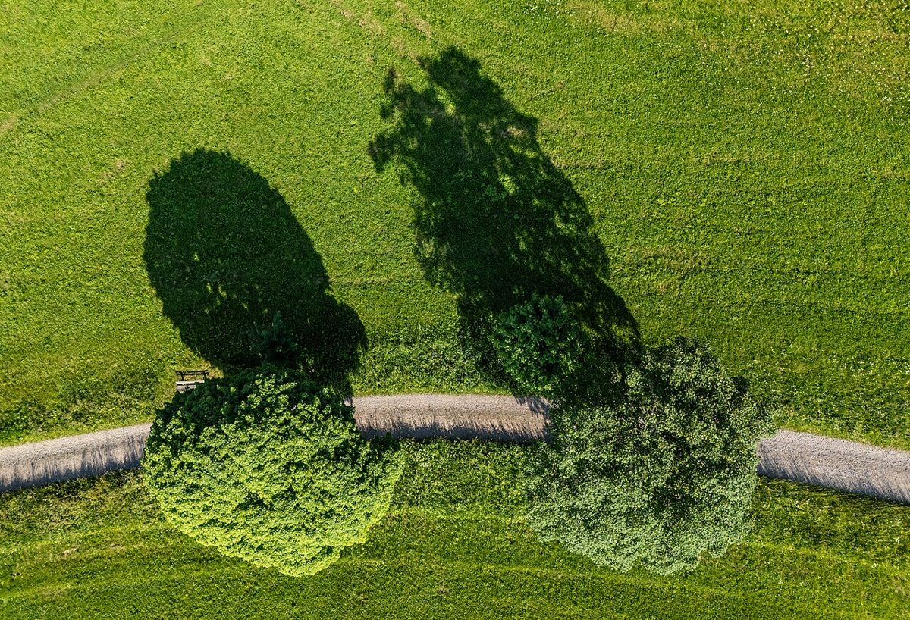

Entdecke den Schwarzwald: Natur, Kultur und Genuss

Der Schwarzwald im Südwesten Deutschlands ist eine der bekanntesten und beliebtesten Urlaubsregionen des Landes. Mit seiner eindrucksvollen Landschaft, seinen malerischen Dörfern und seiner reichen Kultur bietet der Schwarzwald für jeden Geschmack etwas. Ob du auf der Suche nach outdoor-Abenteuern, Entspannung oder kulinarischen Erlebnissen bist – der Schwarzwald hat es alles. Hier erfährst du, wie du das Beste aus deinem Besuch machen kannst.
Anreise in den Schwarzwald
Der Schwarzwald ist gut mit dem Auto, der Bahn oder dem Flugzeug erreichbar. Mit dem Auto kannst du über die Autobahnen A5 (Rheintal) oder A8 (Stuttgart–München) in die Region fahren. Die Anbindung an das Bahnnetz ist ebenfalls ausgezeichnet, mit Hauptbahnhöfen in Städten wie Freiburg, Karlsruhe und Offenburg. Wenn du aus der Ferne anreist, kannst du zum Flughafen Stuttgart oder Baden-Baden fliegen und von dort aus weiterfahren.
Beste Reisezeit
Der Schwarzwald ist das ganze Jahr über ein lohnenswertes Reiseziel, doch die beste Zeit hängt von deinen Interessen ab. Im Frühling und Sommer locken milde Temperaturen und blühende Landschaften Wanderer und Naturfreunde an. Der Herbst bezaubert mit goldenen Wäldern und Weinlese-Festen. Im Winter verwandelt sich die Region in ein Paradies für Skifahrer und Schneeschuhwanderer, während die Weihnachtsmärkte eine gemütliche Atmosphäre schaffen.
Highlight 1: Der Titisee
Der Titisee ist einer der bekanntesten Seen im Schwarzwald und ein Muss für jeden Besucher. Eingebettet in eine malerische Landschaft, lädt der See zum Schwimmen, Bootfahren oder einem Spaziergang am Ufer ein. Im Winter gefriert der See oft, sodass du ihn sogar betreten kannst. Rund um den See findest du zahlreiche Cafés und Restaurants, in denen du regionale Spezialitäten probieren kannst.
Highlight 2: Triberg und die Triberger Wasserfälle
Triberg ist ein charmantes Schwarzwaldstädtchen, das vor allem für seine prächtigen Wasserfälle bekannt ist. Die Triberger Wasserfälle gehören zu den höchsten in Deutschland und bieten spektakuläre Ausblicke. Nach einem Spaziergang durch die Natur kannst du im Ort die weltberühmten Schwarzwälder Kuckucksuhren bewundern und kaufen.
Highlight 3: Freiburg im Breisgau
Freiburg im Breisgau ist die lebendige Hauptstadt des Schwarzwalds und eine Mischung aus mittelalterlicher Architektur und modernem Flair. Erkunde das historische Münster, schlendere durch die gepflasterten Gassen oder genieße das studentische Ambiente in den vielen Cafés und Bars. Freiburg ist auch ein guter Ausgangspunkt für Ausflüge in die Umgebung.
Highlight 4: Der Feldberg
Der Feldberg ist der höchste Gipfel des Schwarzwalds und ein beliebtes Ziel für Naturliebhaber und Sportler. Im Winter ist das Gebiet ein Skigebiet, während im Sommer Wanderer und Mountainbiker die zahlreichen Pfade erkunden. Von der Spitze des Feldbergs hast du einen atemberaubenden Blick über die gesamte Region.
Highlight 5: Die Schwarzwaldhochstraße
Die Schwarzwaldhochstraße ist eine der schönsten Panoramastraßen Deutschlands und führt dich durch die beeindruckendsten Landschaften der Region. Entlang der Strecke gibt es zahlreiche Aussichtspunkte und Wanderwege, die zu einen Stopp einladen. Die Fahrt ist besonders im Herbst ein unvergessliches Erlebnis.
Essen im Schwarzwald
Die Küche des Schwarzwalds ist bekannt für ihre herzhaften und traditionellen Gerichte. Probier unbedingt die Schwarzwälder Kirschtorte, eine der bekanntesten Süßspeisen Deutschlands. Weitere Spezialitäten sind Schwarzwälder Schinken, Flammkuchen und Käsespätzle. In den vielen Gasthäusern und Restaurants kannst du diese Köstlichkeiten in gemütlicher Atmosphäre genießen. Vergiss nicht, den lokalen Wein oder das Schwarzalbier dazu zu bestellen.
Fazit
Der Schwarzwald ist eine vielfältige und faszinierende Region, die Naturliebhaber, Kulturinteressierte und Feinschmecker gleichermaßen begeistern wird. Mit seiner atemberaubenden Landschaft, seinen charmanten Ortschaften und kulinarischen Highlights ist der Schwarzwald ein ideales Reiseziel für jeden Geschmack. Pack deine Wanderschuhe, deine Kamera und deinen Appetit ein – und erlebe die Magie des Schwarzwalds.
Haiktec
- Clever haushalten für mehr finanziellen Spielraum: 50 einfache Spartipps für den Alltag
- YouTube Content ROI Tracker & Budget Planner 2026
- Effektiver Unterricht in 7 Schritten: Praktische Tipps für Lehrer & Nachhilfelehrer
Text mit KI erstellt und automatisch geprueft.